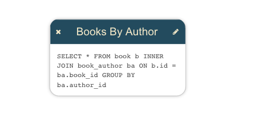
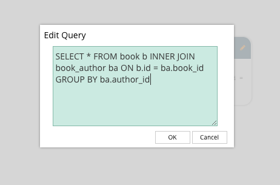

Basic support for dialogs forms part of the Toolkit core. These dialogs provide a simple abstraction around the business of getting input from the user and dealing with it. They're not necessarily fully-featured enough for all applications - they were built for the demo pages in the Toolkit - but they do provide a reasonable amount of functionality for very little effort.
This page provides a discussion of the functionality offered, using the Database Visualizer application for reference.
To initialize the dialogs, first call jsPlumbToolkit.Dialogs.initialize, with an appropriate selector for the templates for your dialogs (see below for an explanation of this):
jsPlumbToolkit.Dialogs.initialize({
selector:".dlg"
});
Each dialog has a template in the HTML, with some class name that you matched in the selector argument to the initialize call above:
<script type="jtk" class="dlg" id="dlgViewQuery" title="Edit Query">
<textarea class="txtViewQuery" jtk-focus jtk-att="query">${query}</textarea>
</script>
In fact it doesn't necessarily need to be a class name that identifies your dialog templates - any valid selector will work. The code uses document.querySelectorAll to retrieve matching elements.
These templates use the same template engine as the Surface renderer, so in this example you can see we've extracted query from a View node's data, and injected it into the textarea. But what might not be immediately obvious is the purpose of the jtk-att attribute: it tells the dialog code that the value of this textarea should be passed to the OK handler, using the key query.
Note also in the above example, the jtk-focus attribute: this tells the dialog handler that the textarea should be given the focus when the dialog first opens.
This example is the dialog that is shown when you edit a View query in the Database Visualizer. We provide the id of the template to use for the dialog, and we provide the View node's data as the backing data for the dialog. Then we provide an onOK callback.

We register a tap listener on the pencil icon in the upper right corner and then inside the event handler we find the Toolkit object related to the clicked icon, then open a dialog to edit it.
jsPlumb.on(document, "tap", ".view .edit i", function () {
var info = renderer.getObjectInfo(this);
jsPlumbToolkit.Dialogs.show({
id:"dlgViewQuery",
data:info.obj.data,
onOK:function(data) {
// update data
toolkit.updateNode(info.obj, data);
}
});
});

The data argument to the onOK callback consists of an object whose key value pairs are determined by the jtk-att attributes found in the template. Recall that above we had a textarea with jtk-att:"query". This means that the data argument to onOK looks like this:
{
query:"the contents of the text area"
}
Dialogs may be positioned in one of four locations: top, bottom, left or right. In each location the dialog is centered in the other axis, eg. for top, the dialog is positioned at the top of the viewport and centered in the X axis.
The default position is top. You can provide a position parameter to the show method to specify a different location:
jsPlumbToolkit.Dialogs.show({
id:"dlgViewQuery",
data:info.obj.data
position:"bottom"
});
The vast majority of the positioning of these dialogs is controlled through the CSS in jsPlumbToolkit-defaults.css. The only exception is the code that keeps the dialog centered in the minor axis when the viewport is resized. CSS is discussed below.
The list of supported input types is:
If you set a title attribute on a dialog's template, that value will be used for the title of the dialog. Alternatively, you can provide a title parameter to the show call.
The default button labels are "OK" and "Cancel". This can be overridden with the labels parameter on a show method call:
jsPlumbToolkit.Dialogs.show({
id:"dlgViewQuery",
data:info.obj.data
position:"bottom",
labels:{
ok:"Yes",
cancel:"No"
}
});
There are five lifecycle callbacks supported:
onOK, with the same data that will be passed to onOK. If you return false from this, the dialog stays open.In addition to providing callbacks to each show call, you can register a callback for each of these four events
that will be called for every dialog show:
You provide these in a globals argument to the initialize method:
jsPlumbToolkit.Dialogs.initialize({
selector:".myDialog",
globals:{
onOpen:function() {
console.log("a dialog was opened");
},
onClose:function() {
console.log("a dialog was closed.");
}
}
});
You can set the jtk-commit attribute on any text input elements that you'd like to have close (and persist) the dialog when the user presses the enter key:
<script type="jtk" class="dlg" id="dlgViewQuery" title="Edit Query">
<input type="text" class="txtViewQuery" jtk-focus jtk-att="query" jtk-commit="true"></input>
</script>
For textarea elements you can also use the jtk-commit attribute, but in this case you need to press ctrl+enter to close the dialog.
<script type="jtk" class="dlg" id="dlgViewQuery" title="Edit Query">
<textarea class="txtViewQuery" jtk-focus jtk-att="query" jtk-commit="true"></textarea>
</script>
This is the full list of classes used by the dialog code. There are defaults for these declared in jsPlumbToolkit-defaults.css.
| Class | Explanation |
|---|---|
| jtk-dialog-underlay | The element that acts as the modal "mask" |
| jtk-dialog-overlay | The element that acts as the parent for dialog content |
| jtk-dialog-overlay-visible | Assigned to an overlay when the dialog is visible |
| jtk-dialog-overlay-x | Assigned to dialogs appearing in the `top` or `bottom` positions. |
| jtk-dialog-overlay-y | Assigned to dialogs appearing in the `left` or `right` positions. |
| jtk-dialog-overlay-top | Assigned to dialogs appearing in the `top` position |
| jtk-dialog-overlay-bottom | Assigned to dialogs appearing in the `bottom` position |
| jtk-dialog-overlay-left | Assigned to dialogs appearing in the `left` position |
| jtk-dialog-overlay-right | Assigned to dialogs appearing in the `right` position. |
| jtk-dialog-buttons | Button container element |
| jtk-dialog-button | An individual button in a dialog |
| jtk-dialog-title | The titlebar of a dialog |
| jtk-dialog-content | The content of a dialog (does not contain the titlebar) |
The default CSS stylesheet also contains several rules such as hover states etc. You may wish to keep that in mind when you write your app-specific overrides.